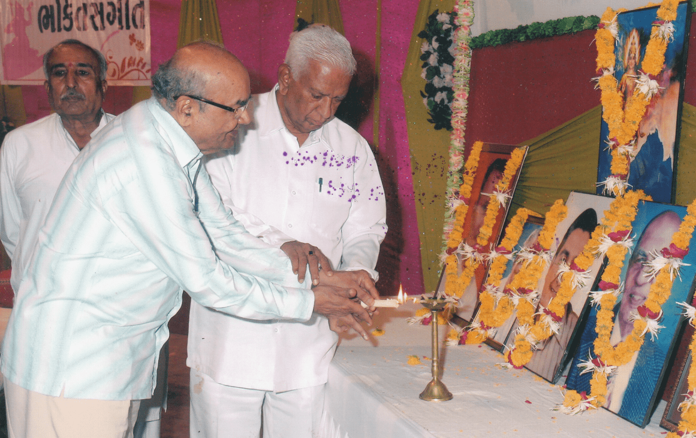
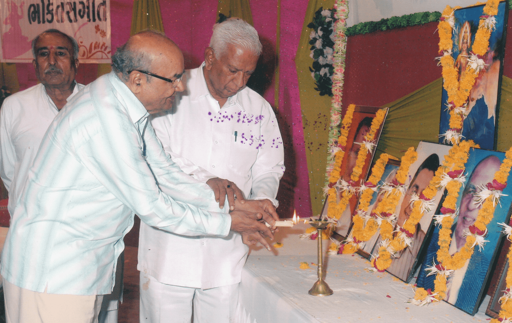

ટ્રસ્ટી મંડળ
ડો. વલ્લભભાઈ કથીરિય
ભૂતપૂર્વ અધ્યક્ષ - રાષ્ટ્રીય કામધેનું આયોગ, ભારત સરકાર ભૂતપૂર્વ પ્રધાન, ભારત સરકાર
ડો. વલ્લભભાઈ કથીરિયા રાજકોટના પીઢ સાંસદસભ્ય, જાણીતા કેન્સર સર્જન, M.S. સુધારક અને ગુજરાતના સૌથી લોકપ્રિય નેતા છે. ડો. વલ્લભભાઈએ સ્વદેશી પશુઓની જાતિના વિકાસ માટે વિવિધ પ્લેટફોર્મ પર ખુબજ સેવા આપી છે, પછી ભલે તે રાષ્ટ્રીય કધેનું આયોગ ના અધ્યક્ષ તરીકે હોય, ગૌસેવા અને ગૌચર વિકાસ બોર્ડ ગુજરાત ના અધ્યક્ષ તરીકે હોય કે પછી GCCI ( ગ્લોબલ કન્ફેડરેશન ઓફ કાવ બેઝ્ડ ઇન્ડસ્ટ્રીઝ) ના ફાઉન્ડીંગ મેમ્બર તરીકે હોય. તેમણે ઘણા વર્ષો રાજકોટ જીલ્લા ભાજપ પ્રમુખ, પ્રદેશ ભાજપ સચિવ અને ભાજપના રાષ્ટ્રીય પરિષદ સભ્ય તરીકે સેવા આપી છે. બાળપણથીજ R.S.S. માં સમર્પિત સ્વયંસેવક રહ્યા અને રાજકોટમાં અને સૌરાષ્ટ્રમાં વિવિધ ક્ષમતાઓમાં સેવા આપી જેમાં એક સમયે રાજકોટ મહાનગર ના સંઘચાલક તરીકે પણ સેવા આપેલી. ૧૯૯૬ થી ૨૦૦૯ સુધી ૪ વખત સાંસદ સભ્ય (લોકસભા) ચુંટાયા. વર્ષ ૧૯૯૮ માં સાંસદમાં ૧૨મી લોકસભા વખતે સમગ્ર ભારતમાં રાજકોટમાંથી સૌથી વધુ લીડ જીતવાનો રેકર્ડ શ્રેય તેમને જાય છે. ગુજરાતના સૌરાષ્ટ્ર વિસ્તારમાં જળ સંચય માટેના તેમના અગ્રણી કાર્યોં ને કરણે ‘ચેક ડેમ સંસદ’ તરીકે જાણીતા છે.
તેઓ ભારે ઉદ્યોગ અને જાહેર સાહસોના કેન્દ્રીય રાજ્ય મંત્રી તરીકે, માનવ સંસાધન વિકાસ અને આરોગ્ય અને કુટુંબ કલ્યાણ જેવા મહત્વપૂર્ણ અને મુખ્ય પોર્ટફોલીઓ ૧૯૯૯ થી ૨૦૦૪ સુધી સંભાળ્યા હતા. રાષ્ટ્રીય કૃષિ મેળો : “એગ્રો વિઝન ૨૦૦૩”, રાષ્ટ્રીય ઔદ્યોગિક મેળો : “હેવી મીટ્સ સ્મોલ”, રાષ્ટ્રીય આરોગ્ય મેળો અને રાષ્ટ્રીય પુસ્તક મેળાનું સફળતા પૂર્વક આયોજન કર્યું. ગુજરાતમાં વિનાશકારી ભૂકંપ દરમિયાન, અસરગ્રસ્ત લોકો માટે તેમણે અથાક બચાવ, રાહત અને પુનર્વસન કર્યો કર્યા છે. ગૌચર વિકાસ બોર્ડ, ગુજરાતના અધ્યક્ષ તરીકે તેમના કાર્યકાળ દરમિયાન “ગાય આધારિત કૃષિ, આરોગ્ય અને પર્યાવરણ” , “પંચગવ્ય ચિકિત્સા” અને સ્વદેશી પશુઓની જાતીઓના અનુવાંશિક સુધારણા અને સંરક્ષણ પર રાષ્ટ્રીય પરિષદોનું સફળતાપુર્વક આયોજન કર્યું. ડો. કથીરિયાએ ખેડૂતોને “એક પરિવાર,એક ગાય” ના મિશન સાથે “ચલો ગાય કી ઓર, ચલો ગાંવ કી ઓર, ચલો પ્રકૃતિ કી ઘર” નું સૂત્ર આપ્યું. ગાય આધારિત ઉદ્યોગમાં “રાષ્ટ્રીય ગોકુલ મિશન” માં યોગદાન આપ્યું છે. તેમણે અત્યાર સુધી કુલ ૧૩૦ વખત રક્તદાન કર્યું છે. તેમણે “દાદાભાઈ નવરોજી ઇન્ડસ્ટ્રીઅલ પીસ એન્ડ ડેવલપમેન્ટ એવોર્ડ” અને ભારત વિકાસ પરિષદ દિલ્હી દ્વારા “રાષ્ટ્રીય ઉત્ક્રીશ્ટતા એવોર્ડ” એનાયત કરવામાં આવ્યો છે. તેઓ શ્રી એસ. એન. ગોએન્કાજી દ્વારા લોકપ્રસિદ્ધ “વિપસ્સના” ધ્યાન ના નિયમિત અભ્યાસી છે. તે વિજ્ઞાન અને આધ્યાત્મિકતા ને રાષ્ટ્ર માટે શ્રેષ્ઠ ઉપયોગી સાધનો માને છે.
શ્રી જ્યોતીન્દ્ર મેહતા
શ્રી જ્યોતીન્દ્રભાઈ મેહતા બી. કોમ., એલ. એલ. બી. અને ડી. એલ. ટી. પી. ક્વોલીફીકેશન સાથે રાજકોટ ના એક નામચીન એડવોકેટ & ટેક્સ કંસલ્ટન્ટ છે. હાલમાં તેઓ (NAFCUB) નેશનલ ફેડરેશન ઓફ અર્બન કો-ઓપરેટીવ બેન્કસ એન્ડ ક્રેડીટ સોસાયટીઝ લી. ના પ્રેસિડેન્ટ, (GUJFED) ગુજરાત અર્બન કો-ઓપરેટીવ બેંક્સ ફેડરેશન અમદાવાદ અને એપેક્ષ કો-ઓપરેટીવ ડેવલપમેન્ટ ફાઈનાન્સ કો. લી. ના ચેરમેન, (RNSB) રાજકોટ નાગરિક સહકારી બેંક લી. અને સૌરાષ્ટ્ર કચ્છ અર્બન કો-ઓપરેટીવ બેંક્સ ફેડરેશન ના ડાઇરેક્ટર, લેંગ લાઈબ્રેરી રાજકોટ ના એકઝીકયુટીવ કમિટી મેમ્બર અને શ્રિઅર્વિન્દ્ભૈ મણીઆર જનકલ્યાણ ટ્રસ્ટ રાજકોટ ના ટ્રસ્ટી તરીકે ના હોદાઓ સંભાળે છે. ભારતીય રીઝર્વ બેંકની બેઠકો/સમિતિઓ માં તેમનું મહત્વપૂર્ણ યોગદાન રહ્યું છે - (UCB) અર્બન કો-ઓપરેટીવ બોડી ને મજબુત કરવા માંટે આર.બી.આઈ. ની નિષ્ણાંત સમિતિ, UCB અને UCB ના પુનરઉત્થાન ભંડોળ ના બંધારણ માટે બનેલ અમ્બ્રેલા ઓર્ગેનાઈઝેશન ના કાર્યકારી જૂથના સભ્ય તરીકે સેવા આપી, છેલ્લાં ૧૦ વર્ષથી સ્ટેન્ડિંગ એડવાઇઝરી કમિટી (RBI) એટેન્ડ કરી રહ્યા છે, RBI (૨૦૧૫) દ્વારા ઉચ્ચ સત્તા ધરાવતી સમિતિમાં સેવા આપે છે. ઉપરાંત અંતરરાષ્ટ્રીય કો-ઓપરેટીવ સંસ્થામાં મહત્વપૂર્ણ યોગદાન આપ્યું છે, (WOCCU) વર્લ્ડ ઓર્ગેનાઈઝેશન ઓફ કો-ઓપરેટીવ ક્રેડીટ યુનીઅનમાં (જુલાઈ ૨૦૧૨ પોલેન્ડ અને જુલાઈ ૨૦૧૯ બહામાસ) માં ભારતના પ્રતિનિધિ તરીકે ભાગ લીધો, કેપટાઉન સાઉથ આફ્રિકા ખાતે BRICS કો-ઓપરેટીવ ની ત્રીજી બેઠકમાં ભારતના પ્રતિનિધિ તરીકે હાજરી આપી. ઉપરાંત વિજય કોમર્શિઅલ કો-ઓપરેટીવ બેંક લી. રાજકોટ ના એક્સ-ચેરમેન, ગુજરાત સરકારની કો-ઓપરેટીવ એકટના સુધારા માટે ઉચ્ચ સ્તરીય સમિતિના ચેરમેન, માધવપુર મર્કેન્ટાઈલ કો-ઓપરેટીવ બેંક લી. રાજકોટ ના પુનરઉત્થાન સમિતિના સભ્ય તરીકે સેવા આપી (કેન્દ્રીય રજીસ્ટ્રાર દ્વારા કૃષિ અને સહકાર મંત્રાલય નવી દિલ્હી દ્વારા નિયુક્ત), પ્રત્યક્ષ કર માટે સલાહકાર સમિતિના ભૂતપૂર્વ સભ્ય તરીકે સેવા આપી ( ભારત સ્ક્ર્કારના નાણાં મંત્રાલય , નવી દિલ્હી દ્વારા નિયુક્ત).

હંસિકાબહેન મણીઆર
આદરણીય શ્રીમતી હંસીકાબહેનનો જન્મ અને ઉછેર જામનગરમાં થયેલ. તેમણે પ્રાથમિક ભણતર સજુબા ગર્લ્સ હાઈસ્કુલ માં અને જુનીયર કોલેજ આર્ટસ વિષય માં કરી. હંસીકાબેન એટલે “Behind every great Man there's a great Woman” નું શ્રેષ્ઠ ઉદાહરણ. ૧૯૫૯માં શ્રી અરવિંદભાઇ સાથે લગ્ન કરીને ગૃહસ્થાશ્ર્મમાં પ્રવેશ કર્યો. સંયુક્ત કુટુંબ અને ઘરમાં એક સોશિયલ વાતાવરણને કારણે જવાબદારી ઘણી રેહતી પરંતુ ધીરજ, ક્ષમા, કરુણા, પારકાને પોતાના કરવાની આવડત, ઘરની આજીવિકાને સુયોગ્ય માર્ગે વાળવી - ઉપયોગ કરવો ..... જેવા તમામ સંસ્કારો સાથે આવેલા હંસીકાબેન સંયુક્ત કુટુંબમાં સહજતાથી ઓતપ્રોત થઇ ગયા.
લગ્ન પછીપણ ભણતર પ્રત્યે રૂચી ધરાવતા રાજકોટની ડી. એચ. કોલેજમાંથી માસ્ટર ઓફ આર્ટસની ડીગ્રી પ્રાપ્ત કરી. શ્રી અરવિંદભાઈ ની જાહેર જીવનની જવાબદારીઓ દિનપ્રતિદિન વધતી જતી હોય હંસિકાબહેને શ્રી અરવિંદભાઈને દરેક કાર્યમાં સંપૂર્ણ સહયોગ કર્યો. શ્રીઅરવિંદભાઇ રાષ્ટ્રીય સ્વયંસેવક સંઘ સાથે ખુબ પહેલેથી જોડાયેલા હતા, પરિણામે શ્રીમતી હંસીકાબેન પણ RSS થી પરિચિત થયા. પ્રચારકો દ્વારાજ સમિતિનું કામ શીખ્યા અને વિવિધ સેવાકાર્ય કરતા ગયા, આજે ૨૨ વર્ષથી રાષ્ટ્રીય સેવિકા સમિતિ માં સંકળાયેલા છે અને હાલમાં પ્રાંત સંચાલિકા છે. વાંચનનો ખુબજ શોખ હોઈ તેને લગતી પ્રવૃતિઓ માં ખાસ જોડાય લેંગ લાઈબ્રેરીમાં પૂર્વ કમિટી મેમ્બર અને હાલમાં ટ્રસ્ટી તરીકે કાર્યરત, જેમાં લોકોને માત્ર પુસ્તક લેવાની નહી પરંતુ જો ઘરમાં વાંચનની વ્યવસ્થા ન હોય તો લાઈબ્રેરીમાં ફક્ત વાંચન માટેની વ્યવસ્થા ગોઠવેલી હતી.
વસંત ગજેન્દ્રગડકર ટ્રસ્ટની સ્થાપના થીજ તેમાં ટ્રસ્ટી તરીકે સંકળાયેલા તેમાં સ્ત્રીઓ પગભર થાય તે હેતુથી સીવણ ક્લાસ શરૂ કર્યા, ભૂતકાળમાં રાજકોટમાં જયારે પાણીની સમસ્યા ખુબ હતી ત્યારે ટેંકરો દ્વારા પાણી પહોંચાળવાનું, સફાઈ કામદારો ના સુધારણા માટેના પ્રયત્નો જેવા વિવિધ કાર્યોં હાથ ધર્યા. ઉપરાંત હાલમાં વિરાણી બહેરા મુંગા શાળામાં ટ્રસ્ટી તરીકે અને સરસ્વતી શિશુમંદિરના કમિટી મેમ્બર તરીકે સેવા આપે છે. હંસિકાબેન એટલે આદર્શ ગૃહિણી, આદર્શ માતા, આદર્શ બહેન, આદર્શ સમાજસેવિકા, કુટુંબવત્સલ, કરુણામૂર્તિ અને નવી પેઢી માટે પ્રેરણામૂર્તિ.

મહાસુખભાઈ શાહ
શ્રી મહાસુખભાઇ ગોવિંદજી શાહ વ્યવહારમાં એકદમ સરળ, સિદ્ધાંતનિષ્ઠ, પ્રમાણિક, નીડર, ધર્મનિષ્ઠ અને આદરણીય વડિલ. તેમનો જન્મ અને હાઈ સ્કુલ સુધીનું શિક્ષણ મોરબીમાં અને ભાવનગરની શામળદાસ કોલેજમાંથી બી.એસ.સી. કેમિસ્ટ્રી, બોટની સાથે કર્યું. એક મેડિકલ રીપ્રેઝન્ટેટીવ તરીકે કારકિર્દીની શરૂઆત કરીને John Wyeth (India) Ltd. નામની ફાર્માસ્યુટિકલ કંપનીમાં જનરલ મેનેજર બન્યા. મહાસુખભાઇ એટલે ફર્મેકોલોજીની એન્સાઈક્લોપીડિયા. આજે ૯૩ વર્ષની ઉંમરે પણ ફર્મેકોલોજીના નવીનતમ સંસકરણનો એમણે અભ્યાસ કરી લીધો હોય. આજની તારીખમાં ગુજરાતના ઘણાં અગ્રણી ફીઝીશીયન ડોક્ટર્સ કોમ્પ્લીકેટેડ કેસમાં ટ્રીટમેન્ટ માટે કઇ દવા, કેવી રીતે પ્રિસ્ક્રાઈબ કરવી એના માટે મહાસુખભાઇની સલાહ લે છે.
મહાસુખભાઇ એટલે ફર્મેકોલોજીની એન્સાઈક્લોપીડિયા. આજે ૯૩ વર્ષની ઉંમરે પણ ફર્મેકોલોજીના નવીનતમ સંસકરણનો એમણે અભ્યાસ કરી લીધો હોય. આજની તારીખમાં ગુજરાતના ઘણાં અગ્રણી ફીઝીશીયન ડોક્ટર્સ કોમ્પ્લીકેટેડ કેસમાં ટ્રીટમેન્ટ માટે કઇ દવા, કેવી રીતે પ્રિસ્ક્રાઈબ કરવી એના માટે મહાસુખભાઇની સલાહ લે છે. શ્રી મહાસુખભાઇ શ્રીમદ્ રાજચંદ્ર ના ચુસ્ત અનુયાયી છે અને હવેનું શેષ જીવન શ્રીમદ્ રાજચંદ્ર ના વિચારો મુજબ ધર્મભાવનાથી વ્યતીત કરે છે.
શિવુભાઈ જયંતિલાલ દવે
જન્મ તારીખ : ૧૦ જુલાઈ ૧૯૪૪ - રાજકોટ
શિવુભાઈ હાલમાં નિવૃત, મૂળ રાજકોટના રહેવાસી છે. તેમણે માધ્યમિક શિક્ષણ કરણસિંહજી હાઈ સ્કુલ અને ઉચ્ચ અભ્યાસ રાજકોટ ની પી. ડી. એમ કોલેજમાંથી પૂર્ણ કરેલ. ૧૯૫૫ માં રાષ્ટ્રીય સ્વયંસેવક સંઘ સાથે જોડાઈ અને એમાં સેવા આપી. પોતાનું ઓટોમોબાઇલ નું બીઝનેસ સરસ ચાલતું હોય, ૧૯૭૫માં કટોકટી વખતે સંઘ આદેશ અનુસાર આ. મેયર શ્રી અરવિંદભાઇ મણીઆર સાથે સંલગ્ન. ૧૯૮૦ - ૧૯૮૫ દરમિયાન શિક્ષણ સમિતિના વાઇસ ચેરમેન તરીકે ની ફરજ બજાવી. શિક્ષણ સમિતિની ૧૦ સ્કુલ ને તાલુકા લેવલે મીટીંગ યોજી, સાંસ્કૃતિક કાર્યક્રમો થકી બાળકો નો ટેલેન્ટ બહાર કાઢવાનો પ્રયત્ન કર્યો જેમાં આગળ જાતા દરેક તાલુકામાં એક વાલીઓની કમિટી બનાવી તેમની દર ૨ મહીને મીટીંગ યોજી અને આ રીતે બળકો માં રહેલ સ્ટેજ ફીયર ને દુર કરવા એક માળખાકીય વ્યવસ્થા તૈયાર કરી. આ સિવાય ૧૫ ઓગસ્ટના શારીરિક ડ્રીલ, રમત ગમત જેવી પ્રવૃતિઓ સામુહિક ધોરણે બાળકો ને કરવી તેમના શારીરિક વિકાસ ને પણ મહત્વ આપ્યું. શ્રી અરવિંદભાઇ મણીઆર જનકલ્યાણ ટ્રસ્ટની સ્થાપનાથી ટ્રસ્ટી તરીકે ની ફરજ માં પ્રવૃત.
દિવંગત ટ્રસ્ટીઓની સ્મૃતિ
 

અરવિંદભાઈ મણીઆર જનકલ્યાણ ટ્રસ્ટના પાંચ સ્થાપક ટ્રસ્ટીઓએ સમયાંતરે ચિરવિદાય લીધી. પાંચે દિવંગત ટ્રસ્ટીઓની ભાવવંદના કરવા તથા ભક્તિસંગીત દ્વારા તેમને ભાવાંજલિ આપવાનો કાર્યક્રમ ટ્રસ્ટના ઉપક્રમે તા. ૦૯.૦૭.૨૦૧૨ ના યોજાયો હતો. કાર્યક્રમના મુખ્ય મહેમાન તરીકે રાજ્યના નાણામંત્રી વજુભાઈ વાળા, પ્રમુખસ્થાને મેયર જનકભાઈ કોટક અને અતિથીવિશેષપદે રાજકોટ મહાનગરના સંઘચાલક નલીનભાઈ વસા હાજર રહ્યા હતા. ભાવાંજલિ કાર્યક્રમમાં રાજુભાઈ વ્યાસ, અનંત વ્યાસ અને ગાર્ગી વોરાનું ભક્તિસંગીત યોજાયું હતું.
ટ્રસ્ટના એક સ્થાપક ટ્રસ્ટી રામકૃષ્ણ (રામભાઈ) ઠાકરનું તા. ૦૧.૧૧.૨૦૦૯ ના અવસાન થયું. તેમની સ્મૃતિમાં રચાયેલ રામભાઈ ઠાકર સ્મૃતિ સંસ્થાન અને અરવિંદભાઈ મણીઆર જનકલ્યાણ ટ્રસ્ટના સંયુક્ત ઉપક્રમે તા. ૦૯.૦૫.૨૦૧૦ ના રોજ એક વિશેષ કાર્યક્રમ ‘રામ સાંભરે રે’ યોજાયો હતો. રામભાઈની સ્મૃતિમાં તૈયાર કરવામાં આવેલી સ્મરણિકાનું વિમોચન રાજ્યના નાણામંત્રી વજુભાઈ વાળાએ કર્યું હતું. કાર્યક્રમના મુખ્ય મહેમાન તરીકે રાજ્યસભાના સભ્ય વિજય રૂપાણી હતા. તદુપરાંત બંને સંસ્થાઓના સંયુક્ત ઉપક્રમે તા. ૦૩.૦૫.૨૦૧૩ ના દિવસે રાજકોટમાં કાવ્યસંગીતનો કાર્યક્રમ ‘તું નહી તો શું ?’ યોજાયો હતો. કાર્યક્રમના ઉદઘાટક તરીકે ગુજરાત વિધાનસભાના અધ્યક્ષ વજુભાઈ વાળા હતા. મુખ્ય મહેમાન તરીકે ‘ફૂલછાબ’ ના તંત્રી કૌશિક મહેતા અને સરગમ કલબના પ્રમુખ ગુણવંત ડેલાવાળા ઉપસ્થિત રહ્યા હતા. કાર્યક્રમમાં વિનુભાઈ વ્યાસ, ગાર્ગી વોરા, નિગમ ઉપાધ્યાય, ડો. ભરત પટેલ નિધિ ધોળકીયા અને ક્રિષ્ન જાણીએ ગુજરાતી કવિઓની રચના પ્રસ્તુત કરી, શ્રોતાઓને ભાવવિભોર કર્યા હતા. સ્વરનિયોજ ડો. ભરત પટેલનું હતું.
ડૉ. પી. વી. દોશી (પપ્પાજી)
અરવિંદભાઈ મણીઆરની સ્મૃતિમાં ગઠિત અરવિંદભાઈ મણીઆર જનકલ્યાણ
ટ્રસ્ટની સ્થાપનાકાળથી પપ્પાજીની પ્રેરણા અને તેમના નેતૃત્વમાં
આ ટ્રસ્ટની જનકલ્યાણની ભાવનાને સમાજમાં ઉજાગર કરવા અને તે
અંગેની વ્યવસ્થા અને સમાજના અલગ અલગ સેવાક્ષેત્રમાં યોગદાન
માટેની વ્યવસ્થા તથા કાર્યક્રમો કરવા માટે અથાગ પરિશ્રમ
પપ્પાજીએ કરેલ હતો.
આ ટ્રસ્ટના સ્થાપક પ્રમુખ તરીકેની સર્વે જવાબદારી અને તે
અંગેના કાર્યમાં તેઓ જીવનપર્યંત સક્રિય રહ્યા હતા. પપ્પાજીએ
રાષ્ટ્રીય સ્વયંસેવક સંઘના ગુજરાત પ્રાંતના સંઘચાલક તરીકેની
જવાબદારી નિભાવી હતી. સંઘના સંસ્કારો અને વિચારોની તેમણે શરૂ
કરેલ દરેક સંગઠનોમાં કાળજીપૂર્વક માવજત કરી હતી, તેમાંનું આ
જનકલ્યાણ ટ્રસ્ટ પણ એક ઉત્તમ ઉદાહરણ છે. વ્યવસાયે દંત ચિકિત્સક
તરીકેની તેમની કારકિર્દી પણ લોકોની સેવા કરવા માટેનું ઉત્તમ
સાધન તેમણે તેમના જીવનમાં પ્રસ્થાપિત કરેલ હતું. દરેક
ક્ષેત્રના લોકોને સાંકળીને સેવાયજ્ઞમાં સાથે જોડવાના તેમના
પ્રયત્નોનું ફળ આજે પણ યાદગાર છે. આવી વ્યક્તિને એટલે જ લોકોએ
પપ્પાજી’નું પ્રેમભર્યું નામ આપ્યું હતું.
કેશુભાઈ પટેલ
કેશુભાઈ સવદાસભાઈ પટેલ અરવિંદભાઇ મણીઆર જનકલ્યાણ ટ્રસ્ટની સ્થાપના થી જોડાયેલા હતા. તેમણે આપના ટ્રસ્ટમાં ઘણા વર્ષો સુધી સેવામાં સક્રિય કામગીરી કરેલી. તેમનો મુખ્ય વ્યવસાય ખેતી અને રાજકોટમાં તેમની લોટની મિલ ચલાવતા. રાષ્ટ્રીય સ્વયંસેવક સંઘમાં પ્રચારક તરીક જોડાણા. ઉપરાંત તેઓ એક પીઢ રાજકારણી હતા શરૂઆત રાજકોટ મ્યુનીસીપલ કોર્પોરેશન ની ચુટણી લડીને, ભૂતપૂર્વ ઉપપ્રમુખ તથા ભૂતપૂર્વ પ્રમુખ ગુજરાત પ્રદેશ જનસંઘ, ૧૯૭૫ થી ૧૯૯૮ સુધી ૬ વખત ચૂંટાઈને ગુજરાત વિધાન સભામાં સભ્યપદ જાળવી રાખ્યું, કટોકટી દરમિયાન જેલવાસ ભોગવ્યો, ભારતીય જનતા પાર્ટીના વરિષ્ઠ નેતા બન્યા ઉપરાંત નાગરિક સહકારી બેંકના ડિરેક્ટર, મચ્છુ બાંધની નિષ્ફળતા બાદ તેઓ રાહત કાર્યોમાં શામેલ થયા હતા. ૧૯૮૦માં લોકસભા સાંસદ, ૧૯૯૦માં ગુજરાત રાજ્યના નાયબ મુખ્યમંત્રી, ૧૯૯૫માં ગુજરાત રાજ્યના મુખ્યમંત્રી, ૨૦૦૨માં રાજ્યસભા સાંસદ જેવા મુખ્ય પદભાર સંભાળ્યા. ૨૯ ઓક્ટોબર ૨૦૨૦ના રોજ તેમનું પોસ્ટ કોવીડ કોમપ્લીકેશન્સ ના કારણે અવસાન થયું. ૨૬ જાન્યુઆરી ૨૦૨૧ ના રોજ તેમને ભારત સરકાર તરફથી પદ્મભૂષણ પુરસ્કાર (મરણોત્તર) એનાયત કરાયો હતો.

ચીમનભાઈ શુક્લ
ચીમનભાઈ શુક્લ ટ્રસ્ટના સ્થાપક ટ્રસ્ટીઓ પૈકીના એક અગ્રગણ્ય
વ્યક્તિ હતા.
પોતાના શિશુકાળથી સંઘના સ્વયંસેવક તરીકે તેમણે સમાજના જુદા
જુદા ક્ષેત્રના લોકોનું એક ઉત્તમ સંગઠન નિર્માણ કરેલ હતું.
સંઘની વિચારધારા અને સંસ્કારોને જાહેરજીવનમાં અને તેમાં પણ
રાજકીય જીવનમાં પ્રભાવી બનાવવામાં તેઓ શરૂઆતથી જનસંઘ અને
ત્યારબાદ ભાજપમાં આખા ગુજરાતમાં તેમનું અનેરું સ્થાન હતું.
નાના-મોટા બધા કાર્યકર્તાઓ તેમને સન્માનથી ચીમનકાકા'નું સંબોધન
કરતા.
ચીમનકાકાનું વાંચન, અભ્યાસ અને કોઈપણ ક્ષેત્રમાં ખાસ કરીને
રાજકીય ક્ષેત્રમાં, તેમનું જ્ઞાન અને કયા સમયે, કઈ રીતે મૂલવણી
કરી તેના ઉકેલ માટે તેમની વ્યૂહરચના ભાજપને આગળ ધપાવવામાં
ઉત્તમ ઉદાહરણ હતું. રાજકોટ શહેર અને ગુજરાતમાં ભાજપને સમાજના
દરેક ક્ષેત્રમાં વ્યાપ્ત કરવામાં ચીમનકાકાનું યોગદાન ઉત્કૃષ્ટ
રહ્યું હતું.
વ્યવસાયે વકીલ હોવા છતાં તેમની જાહેરજીવનની પ્રવૃત્તિમાં રહીને
લોકોની સેવા કરતા હતા. કુશળ સંગઠક, સ્પષ્ટવક્તા, નીડરતા અને
દરેક સામાજિક કાર્યમાં તેમની વિશિષ્ટતા હતી.

રામકૃષ્ણ ઠાકર
રામકૃષ્ણ ઠાકર આમ તો ‘શમભાઈ ઠાકર' તરીકે જાણીતા હતા.
વિદ્યાર્થીકાળથી જાહેરજીવનમાં પદાર્પણ કરનાર રામભાઈ આ ટ્રસ્ટના
સૌથી નાના અને યુવા ટ્રસ્ટી હતા. મેયરના પર્સનલ આસિસ્ટન્ટ
તરીકે તેમની સેવા લાંબા સમય સુધી રાજકોટને મળી હતી. કોઈ પણ
કાર્યક્રમમાં વ્યવસ્થા અને તેનું સુનિયોજન તેમની આગવી વિશેષતા
હતી. બધાની સાથે પારિવારિક સંબંધ રાખી. સેવાકીય ક્ષેત્રમાં
વ્યક્તિનો શ્રેષ્ઠ ઉપયોગ કરવો તે તેમની આવડત તેમના કાર્યકાળ
દરમિયાન સૌ કોઈ માટે પ્રેરણારૂપ હતી. વિદ્યાર્થીઓ અને
મ્યુનિસિપલ કોર્પોરેશનના કર્મચારીઓનું સંગઠન
તેમની કાર્યપદ્ધતિનું ઉત્તમ ઉદાહરણ છે.
રમણીકભાઈ વૈદ્ય
અરવિંદભાઈ મણીઆર જનકલ્યાણ ટ્રસ્ટની સ્થાપનાથી ટ્રસ્ટી તરીકેની
જવાબદારી નિભાવનાર રમણીકભાઈ કાબેલ, અનુભવી અને કર્મઠ
કાર્યકર્તા હતા. તેઓ વ્યવસાયે આયુર્વેદ તરીકેની સેવા આપતા હતા.
તેમના આ વ્યવસાયમાં તેમની સેવાકીય પ્રવૃત્તિઓ તો હતી જ,
સાથોસાથ તેમના જીવનની આધ્યાત્મિકતા અને ઈશ્વર પ્રત્યેની તેમની
શ્રદ્ધાએ મહત્ત્વનો ભાગ ભજવેલ હતો.
શરૂઆતથી સંઘના સ્વયંસેવક તરીકે અને સાથોસાથ રાજકીય જીવનમાં પણ
તેમનું યોગદાન મહત્ત્વનું હતું. રાજકોટ મ્યુનિસિપલ
કોર્પોરેશનમાં દીર્ઘકાળ સુધી લોકોની સેવા કરનાર રમણીકભાઈની
મ્યુનિસિપલ કોર્પોરેશનમાં સ્ટેન્ડિંગ કમિટીના ચેરમેન તરીકેની
કામગીરી યાદગાર છે.

વૈદ્ય કાંતિભાઈ જાની
કાંતિભાઈ વૈદ્ય જનકલ્યાણ ટ્રસ્ટની સ્થાપનાથી જોડાયેલા હતા.
તેઓએ આયુર્વેદ ચિકિત્સક તરીકે નામના મેળવી હતી અને આ કાર્યથી
તેમના વિસ્તારના ગરીબ, મધ્યમવર્ગ અને ખાસ કરીને નાના બાળકોની
સેવા એમણે અવિરત કરેલ હતી. એમની આ સેવાકીય પ્રવૃત્તિને કારણે
તેમના વિસ્તારમાં તેઓ લોકપ્રિય અગ્રણી હતા અને એના કારણે જ તેઓ
રાજકોટ કોર્પોરેશનમાં પચીસ વર્ષ સુધી કોર્પોરેટર તરીકે ચૂંટાયા
હતા. મૃદુભાષી અને શાંતિચત્તે બધાની વિગતો સાંભળીને તેનો યોગ્ય
નિકાલ કરવાની તેમની કુનેહને આજે પણ લોકો યાદ કરે છે.
જાહેરજીવનમાં તેમણે મ્યુનિસિપલ કોર્પોરેશનમાં મોભાના સ્થાન
જેવા કે ડેપ્યુટી મેયર, સ્ટેન્ડિંગ કમિટીના ચેરમેન તરીકે
ઉત્કૃષ્ટ કામગીરી કરી હતી.